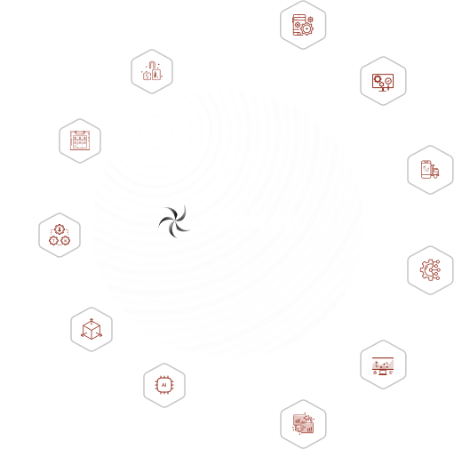

<section
  class="mb-40 flex items-center justify-center gap-52 h-screen before:bg-hero-background before:absolute before:h-[125vh] before:w-full before:bg-no-repeat before:bg-cover before:bg-bottom-3 before:z-[-1]">
  <div class="h-full flex items-center">
    
  </div>
  <div class="h-full flex items-center">
    
  </div>
</section>